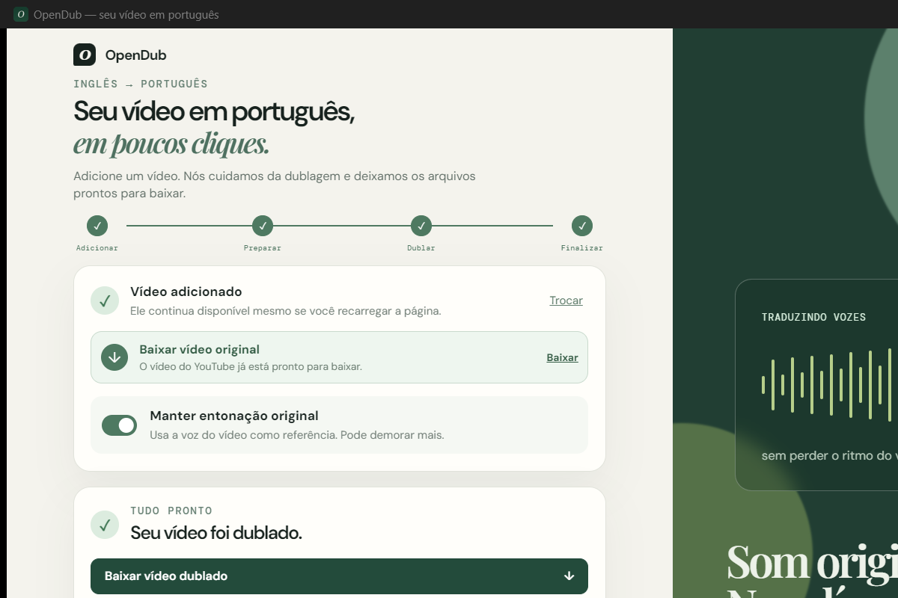
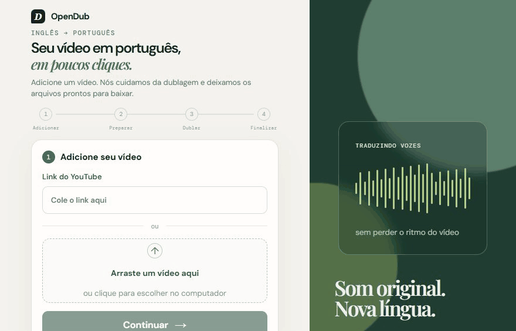

O vídeo original continua intacto
Cortes, música e efeitos ficam exatamente onde estavam. Só a fala muda de idioma.
GRÁTIS E CÓDIGO ABERTO
OpenDub traduz a fala do inglês para o português e devolve o mesmo vídeo — cortes, música e efeitos exatamente onde estavam. Roda no seu computador, sem mensalidade e sem esconder o código.
Windows 10/11 · instalador leve — os componentes necessários são baixados na primeira abertura.

DEMONSTRAÇÃO REAL

POR QUE O OPENDUB
Cortes, música e efeitos ficam exatamente onde estavam. Só a fala muda de idioma.
Ative "Manter entonação original" e o timbre da dublagem fica mais próximo de quem fala no vídeo.
Gere a legenda (.srt) e a transcrição em texto puro (.txt) do áudio original quando precisar.
O processamento roda localmente, no seu computador. Seu vídeo não sobe pro servidor de ninguém.
Sem plano pago, sem limite de vídeos, sem cadastro. Baixe e use.
O projeto inteiro está no GitHub — livre pra ler, alterar e contribuir.
COMO FUNCIONA
Cole um link do YouTube ou escolha um vídeo do computador.
Clique em um botão e deixe o OpenDub trabalhar.
Pegue o vídeo dublado — e a legenda, se você quiser.
COMECE AGORA